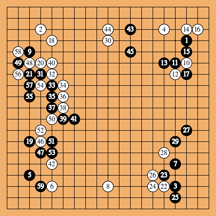
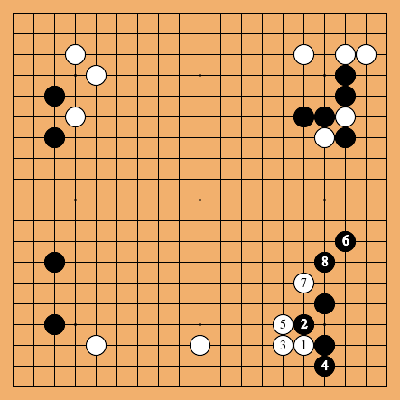
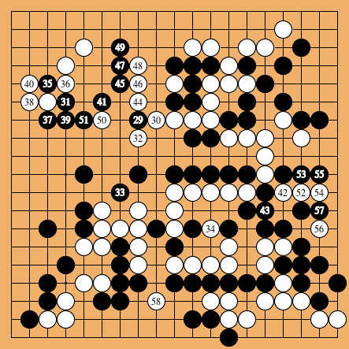
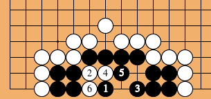
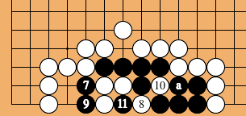
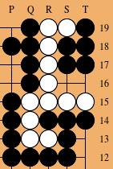
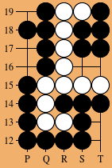

See also sgf, sgfcharset, sgfcheck, sgfcmp, sgfdb, sgfdbinfo, sgfinfo, sgfmerge, sgfsplit, sgfstrip, sgftf, sgfvarsplit, sgfx, ugi2sgf.
% sgftopng [options] outfile < infile % sgftopng [options] outfile [from]-[to] < infileThe program sgftopng creates a go diagram using convert (from ImageMagick).
The input (read from stdin) is an SGF file. The outfile parameter must be something with an extension known to convert, such as .png, .jpg, or .gif. The default is out.png.
% cat game.sgf (; FF[4] EV[The Four-Game Series] RO[2] PB[Honinbo Shusaku] BR[4d] PW[Gennan Inseki] WR[8d] KM[0] RE[Unfinished] DT[1846-07-28] PC[Residence of Tsuji Chujiro in Tennoji, Osaka] ;B[qd];W[dc];B[pq];W[oc];B[cp];W[eq];B[po];W[jq];B[ce];W[qf] ;B[pf];W[pg];B[of];W[qc];B[qe];W[rc];B[qg];W[ed];B[cm];W[df] ;B[cg];W[oq];B[op];W[nq];B[pr];W[np];B[ql];W[on];B[pm];W[jd] ;B[dg];W[eg];B[eh];W[fh];B[ei];W[fi];B[ej];W[fj];B[fk];W[ef] ;B[gk];W[eo];B[lc];W[jc];B[le];W[dm];B[dn];W[cf];B[bf];W[ek] ;B[em];W[dl];B[en];W[dh];B[ci];W[bg];B[ch];W[be];B[dq]) % sgftopng < game.sgfThis yields the image below.

% sgftopng 22-29 < game.sgfThis yields the image below.
When FROM is larger than then number of the last move, one obtains a diagram showing the final board position, with only unnumbered stones. The same result is obtained via the -nonrs (no numbers) option. E.g., the following two commands are usually equivalent
% sgftopng 1000- < game.sgf % sgftopng -nonrs < game.sgf
The -from A option indicates that stones in the diagram must be numbered starting from A. E.g.,
% sgftopng -from 1 image4.png 22-29 < game.sgfyields the image below.

And (in another game, selecting moves 129-158, but labeling the stones 29-58):
sgftopng -from 29 image7.png 129-158 < gamex.sgfyields

% cat stelling.sgf (;GM[1]FF[4] SZ[19]VW[an:ms] GN[Een stelling] PC[Amsterdam] DT[1976-11-19] C[http://www.win.tue.nl/~aeb/games/stelling3.png]PL[B] AB[ds][dr][er][es][fq][gq][hq][iq][jr][kr][js][ks] AW[cs][cr][cq][dq][eq][ep][fp][go][hp][ip][jp][jq][kq][lq][lr][ls]; B[gs];W[fr];B[is];W[gr];B[hr];W[fs];B[er];W[hs];B[es];W[ir];B[gs]; LB[jr:a]) % sgftopng image5.png 1-6 < stelling.sgf % sgftopng image6.png 7- < stelling.sgfThis yields the images below.
 
Each game can contain multiple variations, and the -var N option selects variation N to be shown, where the number N can be found using the -info option described below. The default choice is variation 0 (the final one). Again the from-to option selects the range of moves to be shown as numbered moves.
The -info option lists the variations given in the input file (and does not draw a diagram).
% sgftopng -info < tesujilecture7.sgf Game #1 var 1: (1-0 (1-1 (2-3 (4-11) var 2: (4-4 (5-10) var 3: (5-5 (6-13) var 4: (6-6))) var 5: (4-7)) var 6: (2-3 (4-4 (5-6) var 7: (5-7)) var 8: (4-6))) var 9: (1-0 (1-2) var 10: (1-6) var 11: (1-4) var 12: (1-1 (2-5) var 13: (2-5))) var 14: (1-26 (27-27 (28-33 (34-37) var 15: (34-37)) var 16: (28-28 (29-38) ...The number of moves in a variation from-to is TO−FROM+1. In particular, nodes in a tree diagram with TO = FROM−1 have zero moves (and are problaby setup nodes, with AB[], AW[]).
The -coord option asks for a border with coordinates. Columns are labeled by letters from A, omitting I. Rows by numbers from 1, counted starting at the bottom row. The coordinates are placed both left and right, top and bottom. Using -coordLB one asks to only show coordinates left and bottom (etc.), so that -coord is equivalent to -coordLRTB.
The -view option selects a viewing rectangle (that overrides any VW[] instructions found in the SGF file). The parameter is ROWMIN-ROWMAX,COLMIN-COLMAX, counting from 1, and from the top left hand corner. Selecting a view does not change the coordinates of the points shown.
The -nonrs option asks to omit move numbers. For example,
% sgftopng -nonrs -coordTR -view 1-8,15-19 -o 161.png 161.sgf % sgftopng -nonrs -coordBL -view 1-8,15-19 -o 161a.png 161.sgfyielded the diagrams
 and  .
% sgftopng -font Quivira.ttf -o a.png < a.sgf
% sgftopng -maxcommandsz=8000 -o a.png < a.sgf